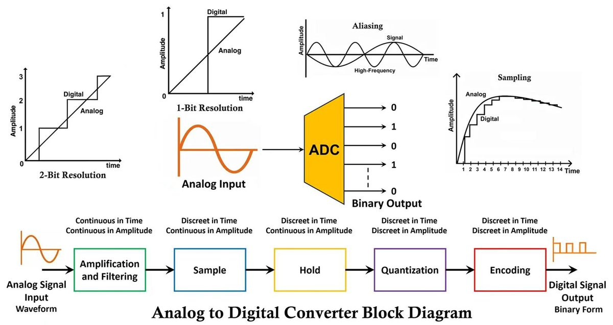
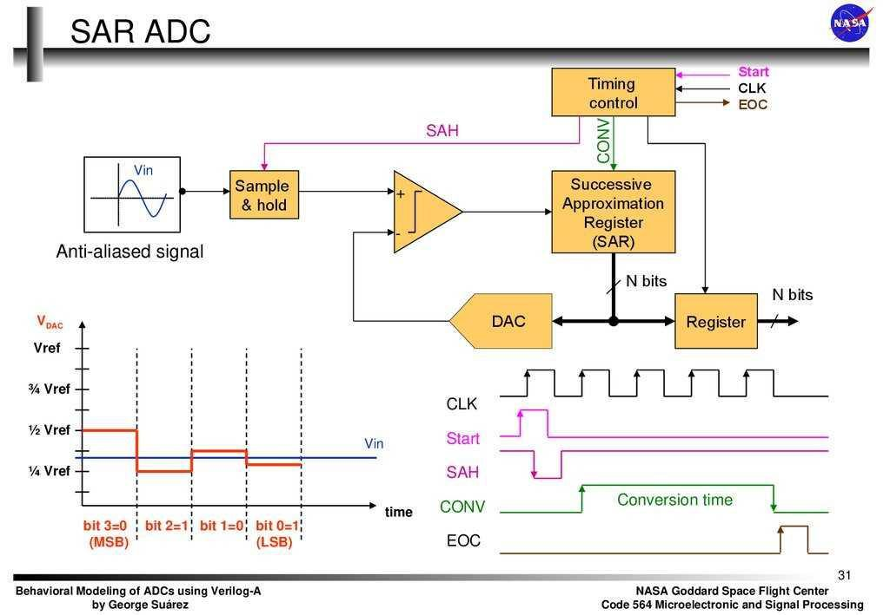
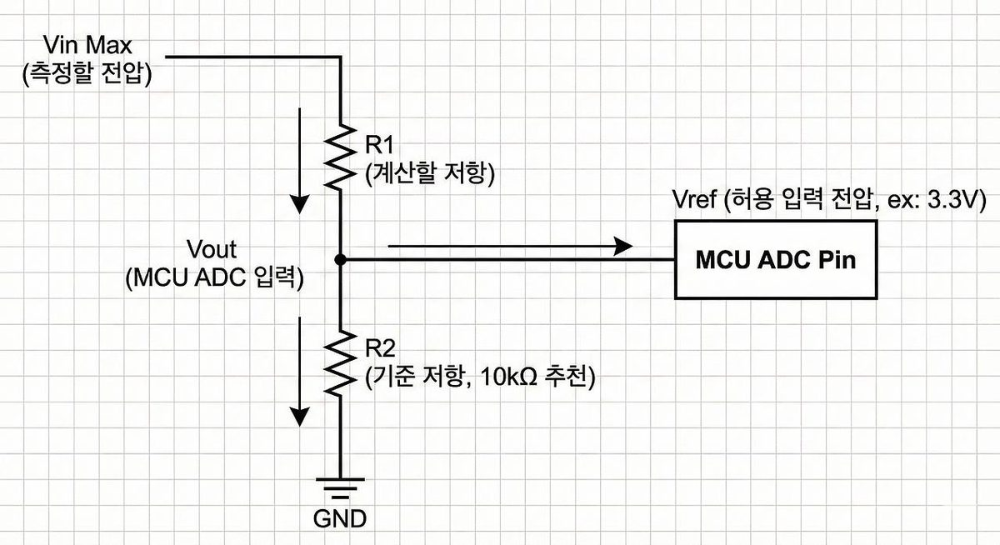
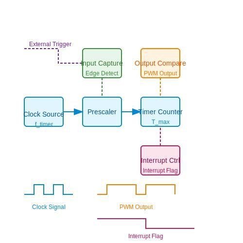
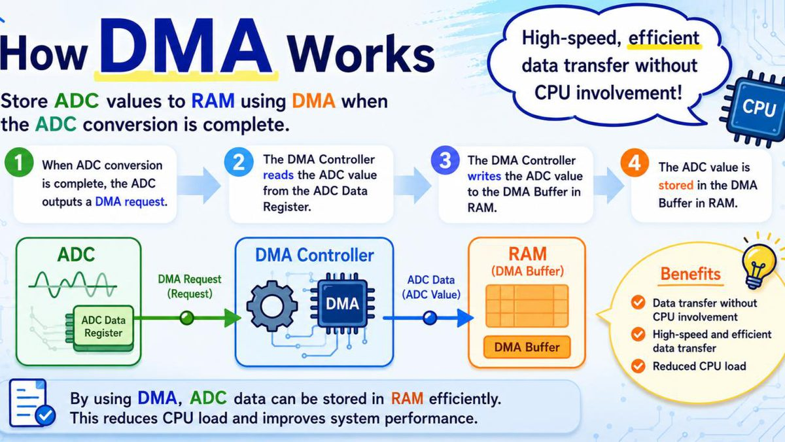
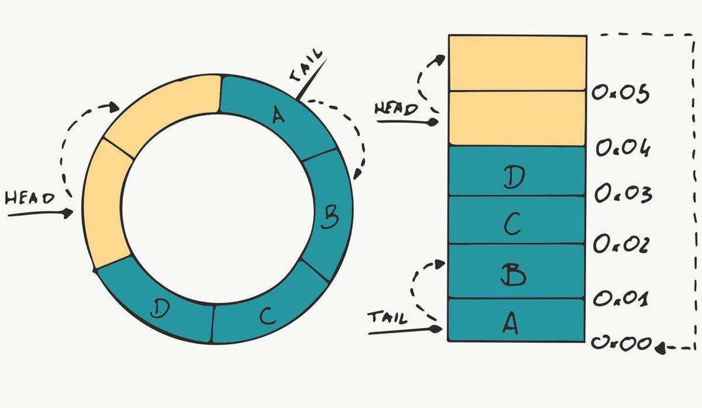
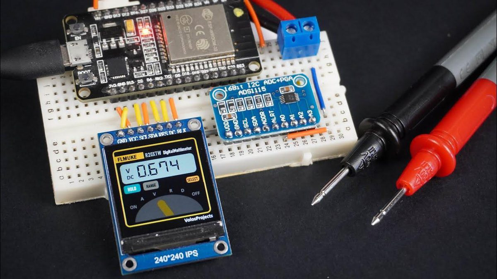

第十二课：XIAO ESP32S3 的 ADC、GPTimer、DMA 与实时数据采集
前面我们已经学习了 GPIO、UART、I2C、SPI、LEDC 和 RMT。
这一课进入嵌入式系统非常核心的能力：
如何让 XIAO ESP32S3 按照精确的时间间隔，持续采集外部模拟信号，并将数据交给 CPU 处理？
这项技术是很多智能硬件的基础，例如：
- 电池电压监测；
- 电流检测；
- 温度和光照采集；
- 麦克风信号采集；
- 电机运行监测；
- 电源质量监测；
- 高频传感器数据采集。
本课围绕六个核心模块展开：
- ADC 模数转换。
- SAR 逐次逼近转换。
- ADC 校准和误差。
- GPTimer 硬件定时器。
- ADC 连续采样和 DMA。
- 环形缓冲区与实时数据处理。
一、ADC：为什么 ESP32-S3 需要模数转换？
CPU 只能处理数字数据。
但是现实世界中的很多信号是模拟信号。
例如：
- 电池输出 3.7V；
- 温度传感器输出 1.2V；
- 光敏传感器输出 0.8V；
- 电位器输出 2.1V。
这些电压不能直接作为普通数字数据交给 CPU。
因此需要 ADC。
ADC 全称 Analog-to-Digital Converter，即模数转换器。

1. ADC 的工作流程
外部模拟信号
↓
输入电路
↓
ADC 采样
↓
量化
↓
编码
↓
数字数据
↓
CPU 处理例如：
输入电压为 1.65V。
假设 ADC 参考范围是 0～3.3V，分辨率为 12 位。
那么 ADC 将电压转换为一个数字值。
理论上可以表示 0～4095 共 4096 个量化等级。
理想情况下：
代入：
得到约 2048。
所以：
输入：1.65V
ADC：约 2048注意，这是理想模型。实际 ESP32-S3 的 ADC 转换结果受到芯片非线性、衰减配置、校准、噪声和输入电路影响。
二、SAR ADC：ESP32-S3 如何把电压转换成数字？
ESP32-S3 的 ADC 使用 SAR，即 Successive Approximation Register，逐次逼近型模数转换原理。
这是理解 ADC 底层工作机制的重点。

1. SAR ADC 的内部结构
主要包含：
| 模块 | 作用 |
|---|---|
| 采样保持电路 | 暂时保存输入电压 |
| DAC | 产生内部比较电压 |
| 比较器 | 比较输入电压和 DAC 电压 |
| SAR 寄存器 | 逐位确定转换结果 |
| 控制逻辑 | 控制转换过程 |
2. 逐次逼近过程
假设 ADC 是 4 位，输入电压对应的数字结果为 1010。
SAR ADC 不会一次性直接得到结果，而是逐位判断。
输入电压
↓
先测试最高位
↓
测试 1000
↓
再测试 1100
↓
再测试 1010
↓
最后测试 1011
↓
确定结果 1010这是一个简化示意，实际 SAR 的比较和位判定过程由硬件自动完成。
3. ADC 分辨率意味着什么？
| 分辨率 | 量化等级 |
|---|---|
| 8 位 | 256 |
| 10 位 | 1024 |
| 12 位 | 4096 |
| 16 位 | 65536 |
分辨率越高，理论上可以区分越细微的电压变化。
但必须注意：
ADC 位数不等于实际测量精度。
例如一个 12 位 ADC，并不代表它就能够准确测量到 12 位有效精度。
实际精度还受：
- 参考电压；
- ADC 线性度；
- 电源噪声；
- 输入阻抗；
- PCB 布线；
- 温度；
- 校准算法；
等因素影响。
三、XIAO ESP32S3 的 ADC 引脚规划
普通版 XIAO ESP32S3 有多个可以用于 ADC 的 GPIO。
常见映射如下：
| XIAO 引脚 | ESP32-S3 GPIO | ADC 通道用途 |
|---|---|---|
| D0 | GPIO1 | ADC1_CH0 |
| D1 | GPIO2 | ADC1_CH1 |
| D2 | GPIO3 | ADC1_CH2 |
| D3 | GPIO4 | ADC1_CH3 |
具体可用性还要结合板卡版本和当前引脚占用核对。
1. ADC 为什么优先考虑 ADC1？
ESP32 系列部分芯片的 ADC2 与无线功能存在资源竞争或使用限制。
ESP32-S3 的 ADC 使用规则应以其自身技术参考手册和当前 ESP-IDF 驱动为准。
对于普通传感器采集项目，建议优先规划 ADC1 通道，减少不必要的资源冲突。
2. 电压输入范围
不能认为所有 GPIO 都能安全输入 0～3.3V 以外的电压。
ESP32-S3 GPIO 不耐受 5V。
如果测量 5V 电源，应当通过电阻分压等输入调理电路，将电压限制在允许范围内。
例如：

使用两个电阻：
待测电压
|
R1
|
├──── ADC 输入
|
R2
|
GND分压公式：
假设：
- R1 = 10kΩ；
- R2 = 10kΩ；
- 输入电压 = 5V。
那么：
这只是电阻分压的理论计算，实际还需要考虑电阻误差、输入阻抗、瞬态过压和 ADC 采样条件。
四、ESP-IDF ADC 驱动实战
ESP-IDF 新版推荐使用 esp_adc 驱动接口。
先创建 ADC 单次采样句柄。
1. ADC 初始化
#include "esp_adc/adc_oneshot.h"
static adc_oneshot_unit_handle_t adc_handle;
void adc_init(void)
{
adc_oneshot_unit_init_cfg_t unit_config = {
.unit_id = ADC_UNIT_1,
.ulp_mode = ADC_ULP_MODE_DISABLE
};
ESP_ERROR_CHECK(
adc_oneshot_new_unit(
&unit_config,
&adc_handle
)
);
adc_oneshot_chan_cfg_t channel_config = {
.atten = ADC_ATTEN_DB_12,
.bitwidth = ADC_BITWIDTH_DEFAULT
};
ESP_ERROR_CHECK(
adc_oneshot_config_channel(
adc_handle,
ADC_CHANNEL_0,
&channel_config
)
);
}这里示例使用 ADC1_CH0，对应 GPIO1。
2. 读取 ADC 数据
int read_adc(void)
{
int raw_value = 0;
ESP_ERROR_CHECK(
adc_oneshot_read(
adc_handle,
ADC_CHANNEL_0,
&raw_value
)
);
return raw_value;
}3. 连续读取
void app_main(void)
{
adc_init();
while (1) {
int value = read_adc();
printf("ADC RAW: %d\n", value);
vTaskDelay(pdMS_TO_TICKS(500));
}
}这样就完成了基本的 ADC 采集。
五、ADC 校准：为什么读数不一定准确？
假设输入电压是 2.0V。
理论上你希望得到对应的 ADC 数值。
但是实际可能读到：
理论值：2481
实际值：2395为什么？
因为真实 ADC 存在误差。
1. 主要误差来源
| 误差类型 | 原因 |
|---|---|
| Offset Error | 零点偏移 |
| Gain Error | 增益误差 |
| INL | 积分非线性 |
| DNL | 微分非线性 |
| Noise | 电气噪声 |
| Reference Error | 参考电压误差 |
2. 使用 ESP-IDF 校准驱动
ESP-IDF 提供 ADC Calibration API。
示例：
#include "esp_adc/adc_cali.h"
#include "esp_adc/adc_cali_scheme.h"
static adc_cali_handle_t cali_handle;
void adc_calibration_init(void)
{
adc_cali_curve_fitting_config_t config = {
.unit_id = ADC_UNIT_1,
.chan = ADC_CHANNEL_0,
.atten = ADC_ATTEN_DB_12,
.bitwidth = ADC_BITWIDTH_DEFAULT
};
ESP_ERROR_CHECK(
adc_cali_create_scheme_curve_fitting(
&config,
&cali_handle
)
);
}转换成毫伏：
int adc_to_mv(int raw_value)
{
int voltage_mv = 0;
ESP_ERROR_CHECK(
adc_cali_raw_to_voltage(
cali_handle,
raw_value,
&voltage_mv
)
);
return voltage_mv;
}实际工程中，需要检查芯片是否支持对应校准方案，并正确处理校准句柄创建失败及资源释放。
3. 为什么校准如此重要？
例如你想制作一个电池电压监控系统。
如果电池实际电压是 4.0V，但 ADC 误差导致显示 3.8V，那么电池状态判断就会受到影响。
所以：
对于测量类项目，不能只看 ADC RAW 值，应该考虑校准、分压电路和实测修正。
六、GPTimer：如何实现精确的硬件定时？
前面使用：
vTaskDelay(pdMS_TO_TICKS(100));可以让任务等待一段时间。
但是它并不适合所有高精度采样场景。
如果你需要：
- 每 1ms 采样一次；
- 每 100μs 触发一次事件；
- 生成精确的控制周期；
- 定时触发数据处理；
就应该研究硬件定时器。
ESP32-S3 提供 GPTimer。

1. GPTimer 的内部机制
主要包含：
- 时钟源；
- 计数器；
- 计数方向；
- 报警比较值；
- 中断机制。
例如：
硬件时钟
↓
定时器计数器
↓
计数到设定值
↓
触发 Alarm
↓
产生中断
↓
通知 FreeRTOS 任务2. 定时器的时间计算
假设定时器分辨率为 1MHz。
那么：
每次计数对应：
如果希望每 1ms 触发一次：
因此报警值可以设置为 1000 个计数单位。
3. ESP-IDF GPTimer 初始化
#include "driver/gptimer.h"
static gptimer_handle_t timer_handle;
void timer_init(void)
{
gptimer_config_t config = {
.clk_src = GPTIMER_CLK_SRC_DEFAULT,
.direction = GPTIMER_COUNT_UP,
.resolution_hz = 1000000
};
ESP_ERROR_CHECK(
gptimer_new_timer(
&config,
&timer_handle
)
);
ESP_ERROR_CHECK(
gptimer_enable(timer_handle)
);
}4. 设置定时器报警
void timer_alarm_init(void)
{
gptimer_alarm_config_t alarm_config = {
.alarm_count = 1000,
.reload_count = 0,
.flags.auto_reload_on_alarm = true
};
ESP_ERROR_CHECK(
gptimer_set_alarm_action(
timer_handle,
&alarm_config
)
);
}还需要注册 Alarm 回调，并启动定时器，才能真正产生周期性事件。
七、DMA：为什么不让 CPU 一直搬运数据？
现在进入本课最重要的技术之一。
假设 ADC 每秒采集 20,000 个数据。
如果每个数据都让 CPU 单独读取、保存和处理，那么 CPU 就会承担大量数据搬运工作。
DMA 可以帮助外设和内存之间传输数据，减少 CPU 的参与。
DMA 全称 Direct Memory Access，即直接内存访问。

1. 普通数据采集方式
ADC
↓
CPU 读取
↓
CPU 保存
↓
RAM2. DMA 数据采集方式
ADC
↓
DMA
↓
RAM 缓冲区
↓
CPU 批量处理CPU 可以在 DMA 传输数据的同时执行其他任务。
3. DMA 的优势
- 降低 CPU 搬运负担；
- 提高数据采集效率；
- 支持连续数据流；
- 适合音频和图像；
- 可以与中断配合；
- 适合实时采集系统。
不过 DMA 并不意味着 CPU 完全不参与。CPU 仍然需要配置 DMA、管理缓冲区、处理完成事件和解决数据同步问题。
八、ADC Continuous：连续采样模式
前面使用的 adc_oneshot_read() 是单次采样模式。
每次调用，程序读取一个 ADC 转换结果。
但在音频、振动检测和电压波形分析中，我们通常需要连续采样。
例如：
第 1 次：采样
第 2 次：采样
第 3 次：采样
第 4 次：采样
……ESP-IDF 提供 ADC Continuous 驱动，可以配合 DMA 完成连续采样。
1. 单次采样与连续采样的区别
连续采样模式
2. 连续采样适合什么场景？
| 应用 | 建议采样频率示例 |
|---|---|
| 电池电压监控 | 1～10Hz |
| 温度传感器 | 1～10Hz |
| 光照变化 | 10～100Hz |
| 电机振动分析 | 1～10kHz，视分析需求 |
| 音频波形采集 | 常见 16kHz、44.1kHz 等 |
这些是应用场景示例，不代表 ESP32-S3 在所有配置下都能稳定达到对应采样质量。实际能力取决于 ADC 驱动、通道数量、采样率、缓冲区和系统负载。
3. ESP-IDF 连续 ADC 的工作机制
ADC 配置
↓
设置采样频率
↓
设置采样通道
↓
启动 ADC Continuous
↓
ADC 硬件连续转换
↓
DMA 写入内部缓冲区
↓
产生数据就绪事件
↓
FreeRTOS 任务读取数据
↓
数据处理这里有一个重要区别：
ADC Continuous 驱动已经管理了底层连续采样和 DMA，不需要你自己再创建一套 DMA 控制器。
4. ESP-IDF 连续 ADC 初始化示例
下面以 GPIO1，也就是 ADC1_CH0 为例。
#include "esp_adc/adc_continuous.h"
#define ADC_SAMPLE_RATE 10000
static adc_continuous_handle_t adc_handle;
void adc_continuous_init(void)
{
adc_continuous_handle_cfg_t handle_config = {
.max_store_buf_size = 4096,
.conv_frame_size = 256
};
ESP_ERROR_CHECK(
adc_continuous_new_handle(
&handle_config,
&adc_handle
)
);
adc_digi_pattern_config_t pattern = {
.atten = ADC_ATTEN_DB_12,
.channel = ADC_CHANNEL_0,
.unit = ADC_UNIT_1,
.bit_width = ADC_BITWIDTH_12
};
adc_continuous_config_t config = {
.sample_freq_hz = ADC_SAMPLE_RATE,
.conv_mode = ADC_CONV_SINGLE_UNIT_1,
.format = ADC_DIGI_OUTPUT_FORMAT_TYPE2,
.pattern_num = 1,
.adc_pattern = &pattern
};
ESP_ERROR_CHECK(
adc_continuous_config(
adc_handle,
&config
)
);
}说明：
sample_freq_hz：转换频率配置；conv_frame_size：每次读取的数据帧大小；max_store_buf_size：驱动内部缓冲区容量；pattern_num：采样通道配置数量；adc_pattern：采样通道及衰减配置。
这里使用的是 ESP32-S3 的单 ADC1 连续采样配置示例。具体的衰减枚举和输出格式要与你安装的 ESP-IDF 版本一致。
5. 启动和读取连续数据
void adc_continuous_start(void)
{
ESP_ERROR_CHECK(
adc_continuous_start(adc_handle)
);
}
void adc_read_task(void *arg)
{
uint8_t buffer[512];
while (1) {
uint32_t bytes_read = 0;
esp_err_t ret = adc_continuous_read(
adc_handle,
buffer,
sizeof(buffer),
&bytes_read,
1000
);
if (ret == ESP_OK) {
printf(
"ADC received: %lu bytes\n",
(unsigned long)bytes_read
);
// 后续解析采样数据
}
vTaskDelay(1);
}
}这里先只观察读取的数据量。不要直接把每个字节当成一个 ADC 数值，因为连续 ADC 输出通常包含通道和数据格式信息。
6. 如何解析 ADC 数据？
ESP-IDF 提供数据解析辅助宏，例如：
#include "esp_adc/adc_continuous.h"
adc_digi_output_data_t *sample =
(adc_digi_output_data_t *)&buffer[0];
int raw_value = sample->type2.data;
int channel = sample->type2.channel;这种解析方式要与前面配置的 ADC_DIGI_OUTPUT_FORMAT_TYPE2 匹配，并且应检查缓冲区长度、结构体对齐和每条记录的有效性。
连续采样的数据不能仅凭 uint8_t 数组直接推断数值。
九、环形缓冲区：如何防止采样数据丢失？
现在我们已经有了 ADC 和 DMA。
但是还有一个问题：
如果 ADC 采集速度很快，而 CPU 处理速度比较慢，会发生什么？
例如：
ADC：每秒采集 10000 个数据
CPU：每秒只能处理 5000 个数据那么数据就会不断积压。
最后可能出现：
- 缓冲区满；
- 新数据覆盖旧数据；
- 数据丢失；
- 采样任务阻塞；
- 系统内存耗尽。
解决这个问题，需要学习环形缓冲区。
1. 什么是环形缓冲区？
Ring Buffer，也叫 Circular Buffer。
它是一块首尾相连的逻辑缓冲区。

假设缓冲区容量为 8：
[0][1][2][3][4][5][6][7]数据写到最后一个位置后，会重新回到开头。
写入顺序：
0 → 1 → 2 → 3 → 4 → 5 → 6 → 7 → 0 → 12. 环形缓冲区中的两个指针
| 指针 | 作用 |
|---|---|
| Head | 写入位置 |
| Tail | 读取位置 |
生产者负责写数据。
消费者负责读数据。
ADC + DMA
↓
生产者
↓
Ring Buffer
↓
消费者
↓
滤波、计算、上传3. C 语言实现一个简单环形缓冲区
#include <stdint.h>
#include <stdbool.h>
#define BUFFER_SIZE 1024
typedef struct {
uint16_t data[BUFFER_SIZE];
volatile uint32_t head;
volatile uint32_t tail;
} ring_buffer_t;
static ring_buffer_t adc_buffer;
bool ring_write(uint16_t value)
{
uint32_t next =
(adc_buffer.head + 1) % BUFFER_SIZE;
if (next == adc_buffer.tail) {
return false;
}
adc_buffer.data[adc_buffer.head] = value;
adc_buffer.head = next;
return true;
}
bool ring_read(uint16_t *value)
{
if (adc_buffer.head == adc_buffer.tail) {
return false;
}
*value = adc_buffer.data[adc_buffer.tail];
adc_buffer.tail =
(adc_buffer.tail + 1) % BUFFER_SIZE;
return true;
}这个示例适合解释环形缓冲区的基本逻辑。
但要注意：volatile 并不能保证多核并发安全，也不能替代互斥锁、临界区或原子操作。
在真实 FreeRTOS 工程中，应根据生产者和消费者的执行环境选择适当的同步机制。
4. 如何知道缓冲区是否满了？
当：
next == tail就表示当前缓冲区没有剩余空间。
可以选择：
- 丢弃新数据；
- 覆盖最旧数据；
- 暂停生产者；
- 提高消费者处理速度；
- 增大缓冲区。
对于实时采集系统，不能只考虑缓冲区大小，还必须保证长期平均消费速度不低于生产速度。
十、数字滤波：如何让 ADC 数据更加稳定？
真实的 ADC 采样数据经常会出现波动。
例如实际输入电压基本不变，但读数可能是：
2040
2043
2038
2045
2041
2039
2044这是因为存在噪声和测量误差。
可以使用数字滤波。
1. 算术平均滤波
连续读取 8 次：
例如：
2040
2043
2038
2045
2041
2039
2044
2042平均值为：
这样可以减少部分随机噪声。
代码：
uint32_t adc_average(uint16_t *data, uint32_t count)
{
uint64_t sum = 0;
for (uint32_t i = 0; i < count; i++) {
sum += data[i];
}
return (uint32_t)(sum / count);
}2. 中值滤波
如果采样数据中偶尔出现特别大的异常值，可以使用中值滤波。
例如：
2040
2042
2041
3000
2039排序：
2039
2040
2041
2042
3000中值：
2041中值滤波对孤立异常值通常比简单平均更有效。
3. 一阶低通滤波
还有一种非常常用的滤波方法：
其中：
- ：当前采样；
- ：当前滤波结果；
- ：上一次滤波结果；
- ：滤波系数。
代码：
float low_pass_filter(
float input,
float previous,
float alpha
)
{
return alpha * input
+ (1.0f - alpha) * previous;
}例如：
filtered = low_pass_filter(
current,
filtered,
0.2f
);alpha 越小，滤波结果越平滑，但响应越慢。
十一、ADC + GPTimer + DMA：完整实时采集架构
现在把本课知识结合起来。
假设你要设计一个电压监控系统：
- GPIO1 连接电压分压电路；
- ADC 连续采样；
- DMA 搬运数据；
- FreeRTOS 任务批量读取；
- 滤波处理；
- 换算实际电压；
- Wi-Fi 上传服务器。
推荐架构：
XIAO ESP32S3 实时采集系统
1. GPTimer 在系统中负责什么？
这里需要特别区分：
- GPTimer：通用硬件定时器，适合定时事件和时间测量。
- ADC Continuous：负责连续 ADC 转换和底层采样数据搬运。
- DMA：负责数据传输。
- FreeRTOS：负责任务调度和数据处理。
不是所有 ADC 采样都必须由 GPTimer 触发。
如果使用 ADC Continuous 驱动，应由驱动配置的采样机制管理转换频率。不要同时再用 GPTimer 去重复触发同一组 ADC 转换。
2. 数据处理任务设计
建议划分为：
| 任务 | 主要工作 |
|---|---|
| ADC 采集 | 接收连续采样数据 |
| Signal Process | 滤波和电压换算 |
| Network | 数据上传 |
| Monitor | 监控内存和采样丢失情况 |
网络传输不能阻塞 ADC 数据消费任务。
3. 实时性如何评估？
需要记录：
- 实际采样率；
- 每帧采样数量；
- DMA 或驱动缓冲区溢出次数；
- 数据处理耗时；
- 缓冲区峰值占用；
- 任务栈余量；
- 内部 RAM 余量。
这些指标比单纯看程序能否运行更加重要。
十二、实际项目：制作 XIAO ESP32S3 电压监测仪
这是本课最推荐完成的第一个综合实验。

1. 实验硬件
| 元件 | 数量 | 作用 |
|---|---|---|
| XIAO ESP32S3 普通版 | 1 | 主控 |
| 10kΩ 电阻 | 2 | 电压分压 |
| 电位器 | 1 | 模拟电压输入 |
| OLED SSD1306 | 1 | 显示电压 |
| 杜邦线 | 若干 | 连接 |
2. 接线
先完成 ADC 实验：
电位器一端 ─── 3V3
电位器另一端 ─ GND
电位器中间端 ─ D0 / GPIO1之后连接 OLED：
OLED VCC ─── 3V3
OLED GND ─── GND
OLED SDA ─── D4 / GPIO5
OLED SCL ─── D5 / GPIO6注意：电位器输出必须保持在 GPIO 允许的电压范围内。不要将外部 5V 直接接到 GPIO1。
3. 软件功能
启动设备
↓
初始化 ADC
↓
初始化 I2C
↓
初始化 OLED
↓
读取 ADC
↓
校准电压
↓
数字滤波
↓
显示电压
↓
循环运行OLED 显示示例：
2.50 V
4. 实验验收标准
- ADC 可以持续读取。
- 调节电位器时电压显示跟随变化。
- 数字滤波后显示相对稳定。
- OLED 不会因为 ADC 采样而明显卡顿。
- 串口能够输出原始值和校准值。
- 运行 30 分钟没有明显内存泄漏或异常重启。
十三、给 Codex 的本课开发任务
可以让 Codex 在现有 XIAO-ESP32S3-Projects 项目中创建独立实验工程。
- 建立独立 ADC 实验。
- 实现单次和连续采样。
- 加入 ADC 校准。
- 实现三种数字滤波。
- 加入 FreeRTOS 数据处理任务。
- 使用 OLED 显示采样结果。
- 记录采样率和缓冲区溢出。
- 提供完整接线说明。
十四、本课知识验收
十五、下一课：I2S 数字音频与音频 DSP 深入开发
第十三课：XIAO ESP32S3 数字音频系统
- I2S 总线工作原理。
- BCLK、WS、DIN、DOUT 信号。
- I2S 主从模式。
- I2S DMA 音频采集。
- PCM 数据格式。
- 16bit、24bit、32bit 音频数据。
- 采样率与音质的关系。
- 数字音频增益。
- FFT 频谱分析。
- VAD 语音活动检测。
- 麦克风和功放驱动。
- Wi-Fi 实时音频传输。
- 音频缓冲和丢帧处理。
这一课会把之前学习的 GPIO、DMA、FreeRTOS、环形缓冲区和数字信号处理全部串联起来。
最终目标：使用普通版 XIAO ESP32S3，外接 I2S 数字麦克风和数字功放，完成一套可以采集、处理、播放和传输声音的基础音频系统。
官方资料：
学习路线建议： 现在不要只停留在看懂代码。每一课都尽量完成一个独立工程，并保留接线图、源码、编译日志和实测结果。最终你的 XIAO-ESP32S3-Projects 就会成为一套可以持续扩展的硬件驱动与产品开发实验平台。